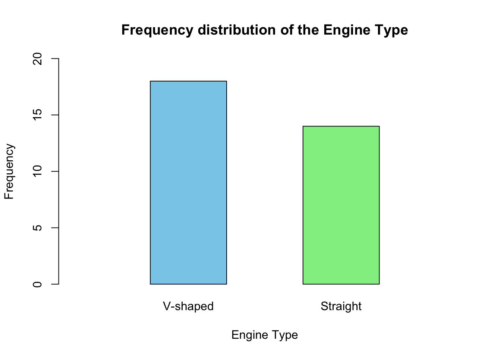
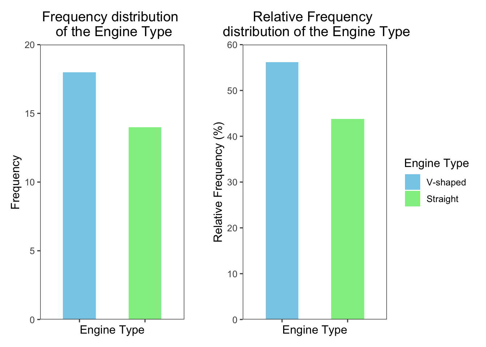
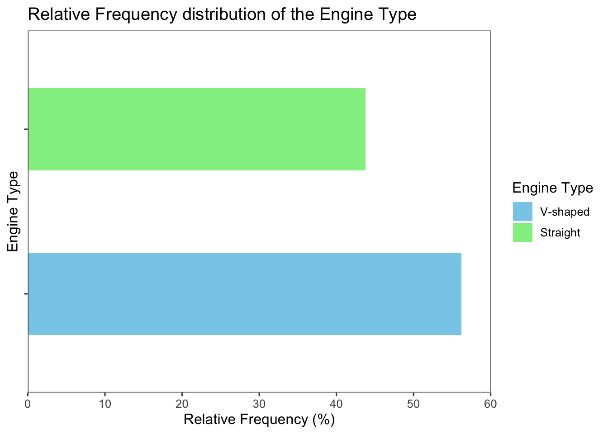
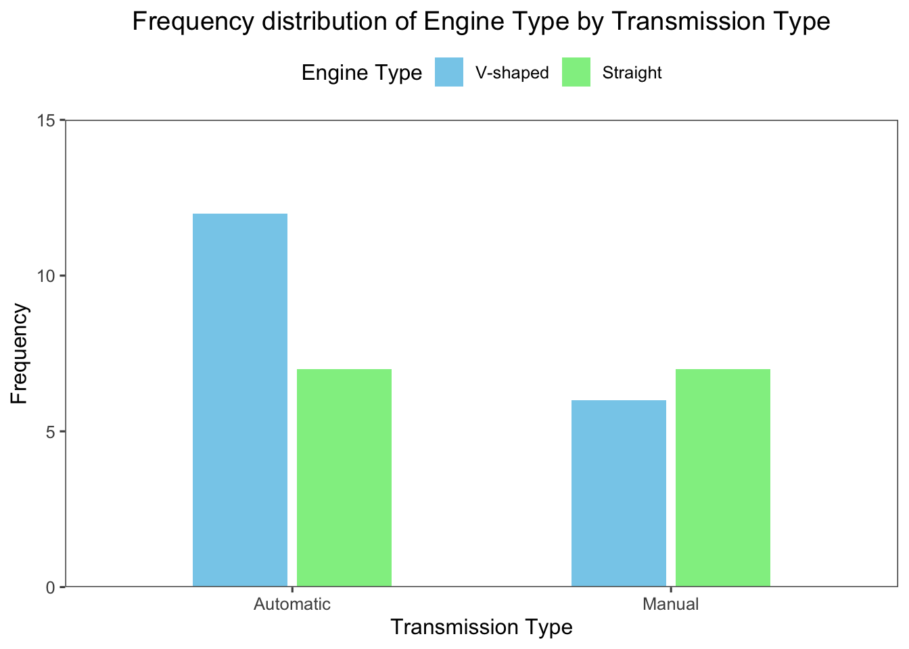

Click to show code
# create a vector of raw data
raw_data <- c(5, 3, 7, 2, 8, 4, 6, 1)
# sort the raw data in ascending order
ordered_array <- sort(raw_data)
# display the ordered array
ordered_array[1] 1 2 3 4 5 6 7 8It is a set of data arranged in ascending or descending order.
For example, consider the following set of raw data (5, 3, 7, 2, 8, 4, 6, 1)
The ordered array of the data is (1, 2, 3, 4, 5, 6, 7, 8).
This can be done using the sort() function in R as follows:
# create a vector of raw data
raw_data <- c(5, 3, 7, 2, 8, 4, 6, 1)
# sort the raw data in ascending order
ordered_array <- sort(raw_data)
# display the ordered array
ordered_array[1] 1 2 3 4 5 6 7 8These variables can be summarized by counting the number of observations in each category (this count is known as the absolute frequency).
The relative frequency of each category is the proportion of observations in that category relative to the total number of observations.
For example, consider the variable vs (engine type) in the mtcars dataset:
This variable contains two categories: 0 (V-shaped) and 1 (Straight).
The frequency distribution and relative frequency of the variable vs can be calculated using base R functions or directly using custom functions from vtable and gtsummary packages:
# load the mtcars dataset
data(mtcars)
# display the values of the vs variable
mtcars$vs [1] 0 0 1 1 0 1 0 1 1 1 1 0 0 0 0 0 0 1 1 1 1 0 0 0 0 1 0 1 0 0 0 1# check the type of the vs variable
class(mtcars$vs)[1] "numeric"# convert the variable to a factor
mtcars$vs <-
factor(
mtcars$vs,
levels = c(0, 1),
labels = c("V-shaped",
"Straight"
)
)
levels(mtcars$vs)[1] "V-shaped" "Straight"# create a frequency distribution table for the vs variable
freq_tbl <- table(mtcars$vs)
freq_tbl
V-shaped Straight
18 14 # calculate the relative frequency
rel_freq <- prop.table(freq_tbl)
rel_freq
V-shaped Straight
0.5625 0.4375 # display as percentage
rbind(
names(rel_freq),
paste0(
round(
(rel_freq * 100),
digits = 1
),
"%"
)
) [,1] [,2]
[1,] "V-shaped" "Straight"
[2,] "56.2%" "43.8%" library(vtable)
library(dplyr)
mtcars %>%
select(vs) %>% # select the vs variable
sumtable(
labels = 'Engine Type', # change the label of the vs variable
digits = 3, # set the number of digits
)| Variable | N | Percent |
|---|---|---|
| Engine Type | 32 | |
| ... V-shaped | 18 | 56.2% |
| ... Straight | 14 | 43.8% |
library(gtsummary)
library(dplyr)
mtcars %>%
select(vs) %>% # select the vs variable
tbl_summary(
label = list(vs = "Engine Type"), # change the label of the vs variable
digits = vs ~ c(0, 1) # set the number of digits, 0 for frequency and 1 for relative frequency
)Characteristic |
N = 32 1 |
|---|---|
| Engine Type | |
| V-shaped | 18 (56.3%) |
| Straight | 14 (43.8%) |
| 1
n (%) |
|
This type of charts is used to represent the frequency distribution of categorical variables.
It consists of a rectangular bar (column) for each category, where the height of the bar represents the absolute frequency or relative frequency of that category.
The bars can be arranged horizontally or vertically.
For ordinal scale variables, it is better to arrange the bars on the \(x\)-axis based on the order of the categories.
The frequency distribution of the vs variable can be represented using a bar chart as follows:
# create a bar chart for the vs variable
barplot(
freq_tbl,
main = "Frequency distribution of the Engine Type",
xlab = "Engine Type",
ylab = "Frequency",
col = c("skyblue", "lightgreen"),
border = "black",
names.arg = c("V-shaped", "Straight"),
ylim = c(0, 20),
width = c(0.2,0.2),
xlim = c(0,1),
space = 1
)
library(ggplot2)
library(ggthemes)
library(patchwork)
# create a data frame from the frequency table
freq_tbl_df <-
data.frame(
engine_type =
factor(
names(freq_tbl),
levels = names(freq_tbl)
),
freq = as.numeric(freq_tbl)
)
# create a new column for the relative frequency
total_freq <- sum(freq_tbl)
freq_tbl_df <-
freq_tbl_df %>%
mutate(
rel_freq =
round(
(freq / total_freq) * 100,
digits = 1
)
)
# create a bar chart with frequency on y-axis
fig1 <-
ggplot(
freq_tbl_df,
aes(
x = engine_type,
y = freq,
fill = engine_type
)
) +
geom_col(width = 0.5) + # you can also use geom_bar(stat = "identity")
labs(
title = "Frequency distribution \n of the Engine Type",
x = "Engine Type",
y = "Frequency"
) +
scale_fill_manual(
values = c("skyblue", "lightgreen")
) +
scale_y_continuous(
limits = c(0,20),
expand = c(0, 0),
) +
theme_few() +
theme(
axis.text.x = element_blank(),
legend.position = "none",
plot.title = element_text(hjust = 0.5)
)
# create a bar chart with relative frequency on y-axis
fig2 <-
ggplot(
freq_tbl_df,
aes(
x = engine_type,
y = rel_freq,
fill = engine_type
)
) +
geom_col(width = 0.5) +
labs(
title = "Relative Frequency \n distribution of the Engine Type",
x = "Engine Type",
y = "Relative Frequency (%)",
fill = "Engine Type"
) +
scale_fill_manual(
values = c("skyblue", "lightgreen")
) +
scale_y_continuous(
limits = c(0,60),
expand = c(0, 0),
) +
theme_few() +
theme(
axis.text.x = element_blank(),
plot.title = element_text(hjust = 0.5)
)
fig1 + plot_spacer() + fig2 + plot_layout(widths = c(1, 0.05, 1))
# Use the same code as described in the previous tab but just add coord_flip() to the ggplot object
ggplot(
freq_tbl_df,
aes(
x = engine_type,
y = rel_freq,
fill = engine_type
)
) +
geom_col(width = 0.5) +
labs(
title = "Relative Frequency distribution of the Engine Type",
x = "Engine Type",
y = "Relative Frequency (%)",
fill = "Engine Type"
) +
scale_fill_manual(
values = c("skyblue", "lightgreen")
) +
scale_y_continuous(
limits = c(0,60),
expand = c(0, 0),
) +
coord_flip() +
theme_few() +
theme(
axis.text.y = element_blank(),
)
Bar charts can be also used to compare the frequency distribution of a categorical variable across different groups.
For example, the following bar chart shows the differences in the frequency distribution of the vs variable across the am variable (transmission type; 0: automatic and 1: manual) in the mtcars dataset:
library(ggplot2)
library(ggthemes)
ggplot(
mtcars,
aes(
x = factor(am),
fill = factor(vs),
)
) +
geom_bar(
position = position_dodge(width = 0.55), # add small gap between bars
width = 0.5
) +
labs(
title = "Frequency distribution of Engine Type by Transmission Type",
x = "Transmission Type",
y = "Frequency",
fill = "Engine Type",
) +
scale_fill_manual(
values = c("skyblue", "lightgreen")
) +
scale_x_discrete(
labels = c("Automatic", "Manual") # change the labels of the x-axis
) +
scale_y_continuous(
expand = c(0, 0),
limits = c(0, 15)
) +
theme_few() +
theme(
legend.position = "top",
plot.title = element_text(hjust = 0.5)
)
It is also used to represent the frequency distribution of categorical variables.
It consists of a circle divided into parts, where each part represents a category.
The size of each part is equal to the angle, which is calculated by multiplying the relative frequency of the category by \(360 ^\circ\) (the total angle of a circle).
For instance, the relative frequency of the V-shaped engine in the above example is \(\displaystyle \frac{18}{32} = 0.5625\), this corresponds to an angle of \(\displaystyle 0.5625 \times 360 = 202.5^\circ\) degrees.
The pie chart is suitable for variables with a small number of categories; it becomes cluttered and hard to read when the number of categories is large.
If the number of observations is small, it is recommended to display the absolute frequency on the chart rather than the percentage, which can be misleading.
# extract the relative frequencies from the data frame created above
percentages <- freq_tbl_df$rel_freq
# create labels with the percentages
labels <-
paste0(c("V-shaped", "Straight"),
"\n",
percentages,
"%"
)
# create a pie chart
pie(
freq_tbl,
main = "Pie chart of the Engine Type",
col = c("skyblue", "lightgreen"),
labels = labels, # Use the percentage labels
clockwise = TRUE
)
library(ggplot2)
library(ggthemes)
ggplot(
freq_tbl_df,
aes(
x = "",
y = rel_freq,
fill = engine_type
)
) +
geom_bar(
stat = "identity",
width = 1
) +
coord_polar("y", start = 0) +
labs(
title = "Pie chart of the Engine Type",
fill = "Engine Type"
) +
scale_fill_manual(
values = c("skyblue", "lightgreen")
) +
theme_void() +
theme(
legend.position = "none",
plot.title = element_text(hjust = 0.5)
) +
geom_text(
aes(label = labels),
position = position_stack(vjust = 0.5)
)Daniel, W. W. and Cross, C. L. (2013). Biostatistics: A Foundation for Analysis in the Health Sciences, Tenth edition. Wiley
Heumann, C., Schomaker, M., and Shalabh (2022). Introduction to Statistics and Data Analysis: With Exercises, Solutions and Applications in R. Springer
Lane, D. M. et al., (2019). Introduction to Statistics. Online Edition. Retrieved September 14, 2024, from https://openstax.org/details/introduction-statistics